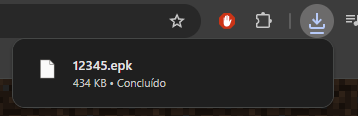
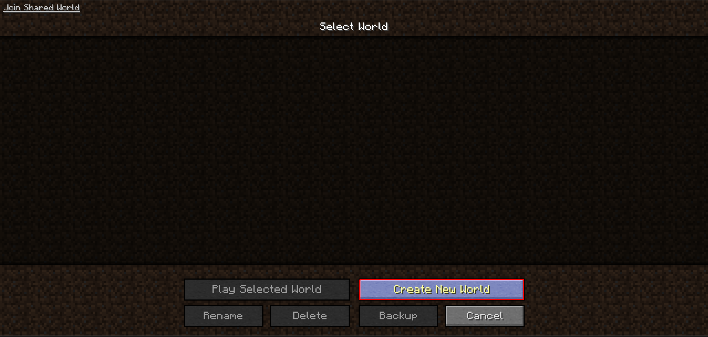
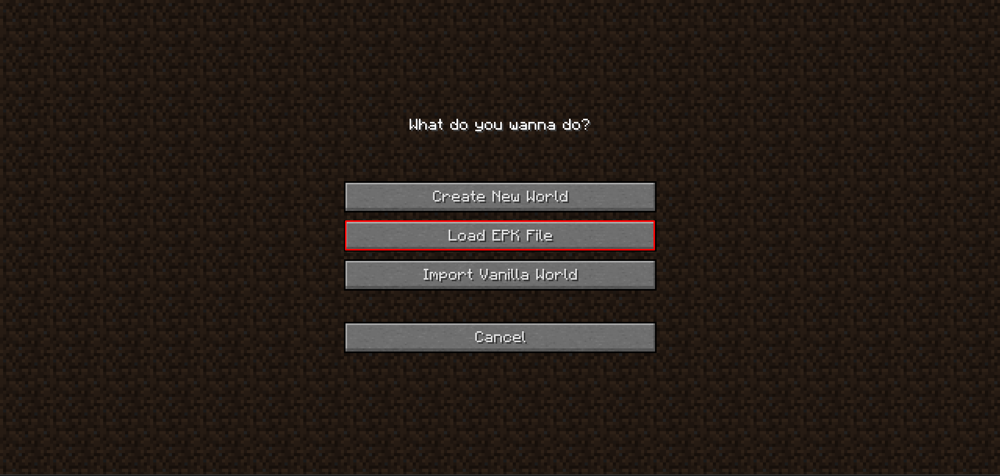
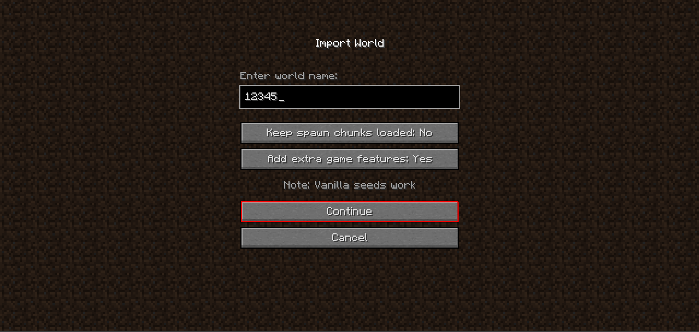
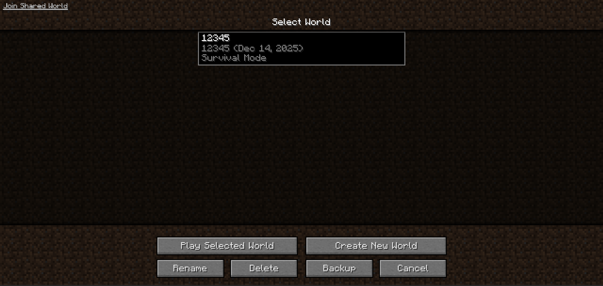

❗ Como salvar o backup/save do meu mundo?
1 - Clique no mundo que você quer salvar, depois clique em Backup;

2 - Clique em " EXPORT EPK FILE ";

3 - O arquivo vai vir com o mesmo nome do seu mundo.

❗ Agora como faço para jogar no mundo que eu salvei?
4 - Clique em " Create New World ";

5 - Clique em " LOAD EPK FILE ";

6 - Selecione o arquivo .EPK que você baixou no inicio;

7 - Não mude nada, apenas clique em Continue;

8 - O mundo foi exportado e já pode ser jogado com tudo que você fez anteriormente.
